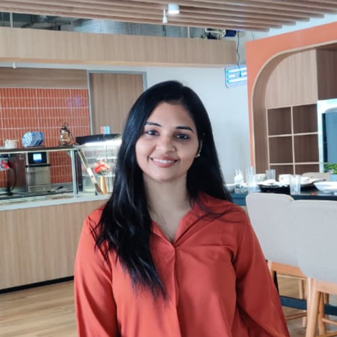

Backend Software Engineer with 5+ years of experience designing scalable REST APIs, microservices, and cloud-native enterprise applications using Node.js, Java, Spring Boot, and SAP CAP. Experienced in owning production services, customer-critical issues, Apache Kafka integrations, CI/CD pipelines, and end-to-end feature delivery across enterprise healthcare and SaaS platforms.
August 2022 – Present
Designed and maintained 10+ scalable production REST APIs supporting Cell & Gene Therapy Treatment Centre Management workflows. Own 5+ business modules, delivering features from requirements through production deployment. Resolved 30+ customer-critical production issues through root-cause analysis, improving platform reliability. Developed event-driven integrations using Apache Kafka for asynchronous communication. Contributed to CI/CD pipelines and production releases. Performed code reviews and collaborated with architects, QA, and product teams.
June 2021 – August 2022
Developed and maintained microservices supporting healthcare workflows including pre-authorization, medical coding, and claim resolution. Built scalable backend systems using Node.js, Java, and Spring Boot, integrated with React-based frontends. Deployed and managed services on AWS, ensuring high availability and fault tolerance.
June 2020 – November 2020
Deployed web applications on Azure Virtual Machines and Windows Server environments. Hosted ASP.NET applications using Azure App Services and IIS. Developed enterprise reports using SAP Crystal Reports and SQL Server stored procedures.
2017 – 2021
CGPA: 7.88
GlowDesk
Production-grade REST API for salon appointment booking with auto-stylist assignment, role-based access (Customer, Receptionist, Admin), async email reminders, Flyway DB migrations, and a multi-branch franchise-ready architecture. Deployed on Render via Docker.
Passionate about designing scalable, resilient backend systems using Node.js, Java, and Spring Boot. Interested in microservices patterns, API design, and building services that handle real-world enterprise complexity.
Keen interest in building and deploying cloud-native applications on AWS and Azure. Enjoy working with containerisation (Docker), infrastructure-as-code (Terraform), and CI/CD pipelines using Jenkins.
Fascinated by the rapid evolution of AI and large language models. Interested in exploring how LLM-powered tools and AI services can be integrated into backend systems to build smarter, more capable applications.
Strong advocate for clean, maintainable code and robust engineering practices. Interested in improving developer tooling, code review culture, observability, and reducing operational toil through better system design.